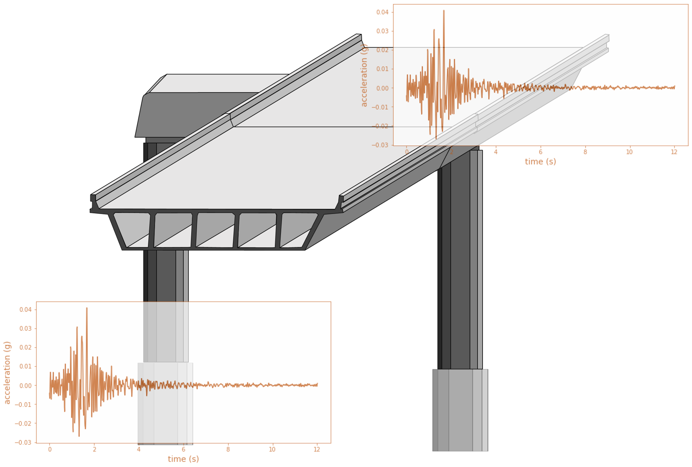
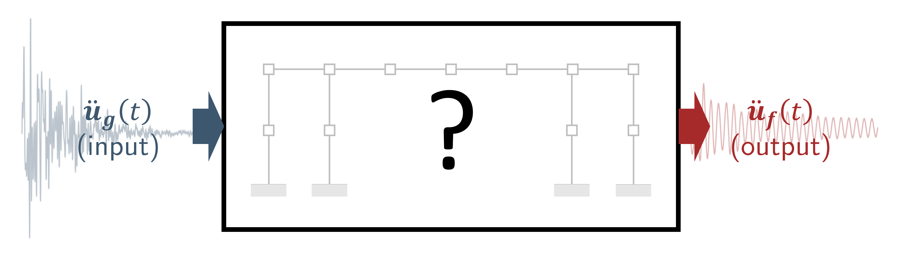
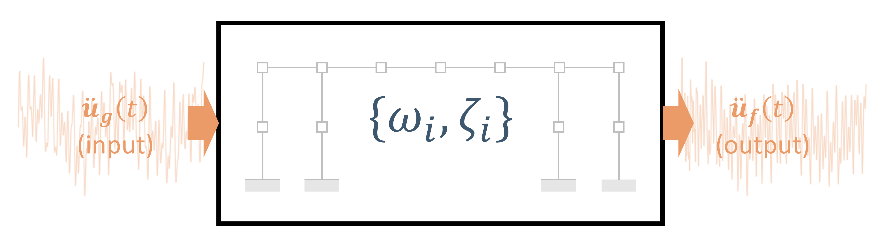
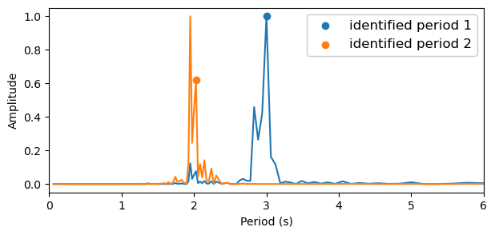

Overview of the mdof package#

The mdof package is designed to provide a convenient interface for computing dynamic analyses of structural vibrations.
Installation#
If you are running this notebook locally, install mdof from pypi.
pip install mdof
If you are running this notebook from an external server on JupyterHub/JupyterLab, DataHub, or Binder, uncomment and run the next cell to install the required packages.
[1]:
# !pip install -Ur requirements.txt
Import#
In Python, import the package.
[2]:
import mdof
Investigate Structural Vibrations#
1. Simulate or load a structural response.#
Given the modal parameters, what is the structural response data?#
[3]:
from mdof.utilities.config import create_time_vector, gather_system_parameters, generate_input
# time parameters
nt, dt, tf, times = create_time_vector(nt=5000,dt=0.03)
# system parameters
T, m, c, k, Phi = gather_system_parameters(T=[3,2],m=10,c=1)
import numpy as np
zeta = c/(2*np.sqrt(m*k))
print(f"Damping ratios:", zeta)
# input motion
input_motion = generate_input(times)
Periods: [3 2]
Modeshapes:
[[1. 0.]
[0. 1.]]
Damping ratios: [0.02387324 0.01591549]
[4]:
# Calculate the response using numerical integration.
import sdof, numpy as np
output_motion = np.array([sdof.integrate(m=m,c=c,k=k[i],f=input_motion,dt=dt)[0] for i in range(len(T))])
[5]:
# Plot the input and output motions.
from mdof.utilities.printing import plot_io
plot_io(input_motion, output_motion, times)
[5]:


2. Modal identification from data.#
Given the structural response data, what are the modal parameters?#


[6]:
# With a state-space model:
periods, modeshapes = mdof.modes(input_motion, output_motion, dt=dt, order=2*len(T), method='srim')
print(f"Periods identified from data: {np.round(periods, 3)}")
print(f"Mode shapes identified from data:\n {np.round(np.abs(modeshapes), 3)}")
Periods identified from data: [3.001 2.001]
Mode shapes identified from data:
[[0.071 0. ]
[0. 0.071]]
[7]:
# With a frequency domain, output-only model:
from mdof.utilities.printing import plot_fdd
periods, modeshapes = plot_fdd(outputs=output_motion, dt=dt)
print(f"Periods identified from data: {np.round(periods, 3)}")
print(f"Mode shapes identified from data:\n {np.round(np.abs(modeshapes), 3)}")
Periods identified from data: [3. 2.027]
Mode shapes identified from data:
[[1. 0.001]
[0.001 1. ]]

3. Response prediction from data.#
For any given input motion, can we generate the response of the system?#
[8]:
# Reproduce the response with the state space model
from control import ss, forced_response
from mdof.utilities.printing import plot_pred
realization = mdof.system(method="okid-era", inputs=input_motion, outputs=output_motion,order=2*len(T))
modes = mdof.modal.system_modes(realization,dt)
from mdof.utilities.printing import print_modes
print_modes(modes)
out_pred = mdof.predict(realization,input_motion)
plot_pred(ytrue=output_motion, models=out_pred, t=times, title="State Space Model Displacement Response")
print(f"mean absolute error: {np.mean(np.abs(output_motion-out_pred))}")
Spectral quantities:
T(s) ζ EMACO MPC EMACO*MPC
3.001 0.02386 1.0 1.0 1.0
2.001 0.01589 1.0 1.0 1.0
Mean Period(s): 2.5012359909299615
Standard Dev(s): 0.49975407347712175
mean absolute error: 4.502252724325692e-06

[9]:
input_motion_2 = np.sin(times)
output_motion_2 = np.array([sdof.integrate(m=m,c=c,k=k[i],f=input_motion_2,dt=dt)[0] for i in range(len(T))])
out_pred_2 = mdof.predict(realization,input_motion_2)
plot_pred(ytrue=output_motion_2, models=out_pred_2, t=times, title="State Space Model Displacement Response on New Input")
print(f"mean absolute error: {np.mean(np.abs(output_motion_2-out_pred_2))}")
mean absolute error: 2.1372453781226074e-07

[10]:
from mdof.macro import stabilization
fig = stabilization(input_motion, output_motion, dt=dt, orders=(2,50,8), plotly=True)
[11]:
fig.update_layout({'xaxis': {'autorange': True},
'xaxis2':{'range':(0,0.1), 'autorange': False},
'yaxis':{'range':(0,10), 'autorange': False}})
Data type cannot be displayed: application/vnd.plotly.v1+json